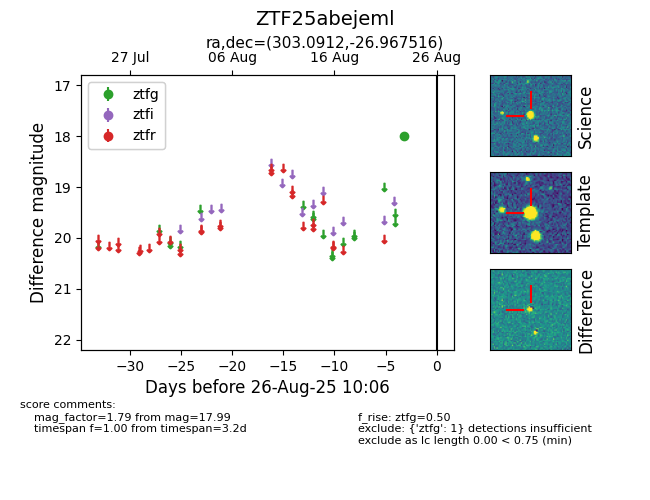

Target ZTF25abejeml at 2025-08-26 10:06, see:
FINK: fink-portal.org/ZTF25abejeml
Lasair: lasair-ztf.lsst.ac.uk/objects/ZTF25abejeml
ALeRCE: alerce.online/object/ZTF25abejeml
alt names
ZTF25abejeml (ztf,fink)
coordinates:
equatorial (ra, dec) = (303.0912,-26.96752)
galactic (l, b) = (15.4706,-28.75662)
photometry
last ztfg=17.99
1 ztfg detections
